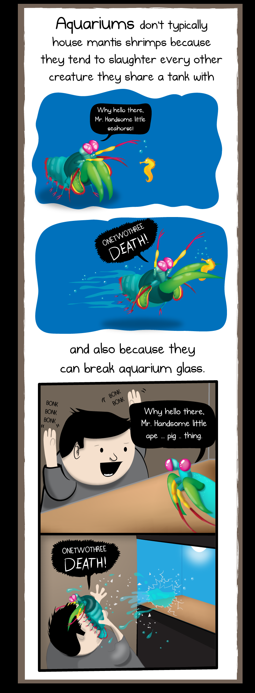

Fatos sobre o Stomatopoda
Informações Gerais
- Nome Científico: Odontodactylus scyllarus
- Reino: Animalia
- Filo: Arthropoda
- Subfilo: Crustacea
- Classe: Malacostraca
- Subclasse: Horplocarida
- Ordem: Stomatopoda
Não são animais de estimação!
O Stomatopoda é um animal que não deve ser colocado em um aquário, por ter a força para quebrar o vidro do aquário e ter a tendência a matar os outros animais que lá se encontram.
Soco Potente!
O Stomatopoda "soca" suas presas com uma força de até 2,5 mil vezes o seu tamanho em menos de 800 microsegundos.

Visão impecável!
O Stomatopoda possui visão de 360 graus, é capaz de determinar profundidade e localização de objetos em três ângulos, alem de possuir 8 fotorreceptores para distinção de cores.